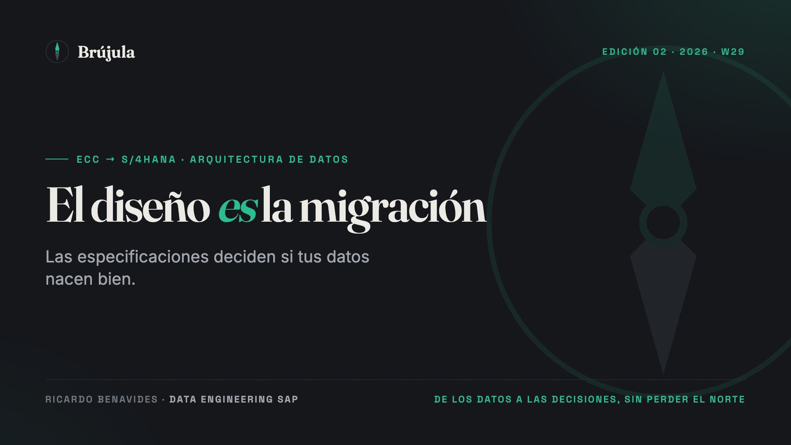
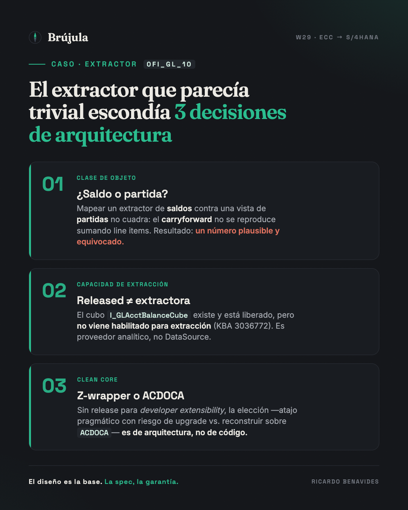
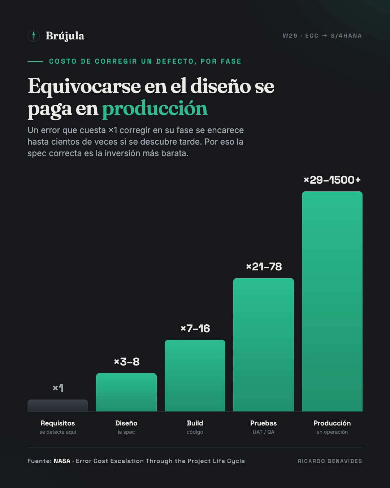

Por qué en un salto ECC → S/4HANA las especificaciones deciden si tus datos nacen bien.
Hay una frase que escucho en casi todos los proyectos de migración a S/4HANA y que esconde el error más caro: "los extractores solo hay que pasarlos a CDS views".
Suena a tarea mecánica. Un extractor clásico entra, una CDS view sale, se reapunta la transformación de BW y listo. Es la promesa del lift-and-shift: mismo dato, nueva plataforma, cero pensamiento. Y es justo ahí, en ese "cero pensamiento", donde una migración se pierde meses antes de que alguien escriba una línea de código.
Mi tesis es simple y la sostengo desde el rol de arquitecto: el diseño es la base del cambio, y la especificación funcional es la garantía de que la migración salga bien. No el desarrollo. No las herramientas. El diseño. Todo lo demás ejecuta una decisión que ya se tomó —bien o mal— cuando se redactó la spec.
Cuando SAP movió el mundo a S/4HANA, también cambió la forma de sacar datos hacia BW. La extracción clásica por S-API dejó de ser la vía estratégica; su reemplazo es la extracción basada en CDS views sobre el contexto ODP (ODP-CDS), habilitada con la anotación @Analytics.dataExtraction.enabled. En la nube pública, el camino clásico por RFC ya ni siquiera existe. Hasta aquí, todo el mundo asiente.
El problema empieza con tres verdades que la spec mecánica ignora:
Primera: released no significa extractora. Que una CDS view exista, esté liberada y hasta lleve el dato que buscas no implica que puedas usarla como DataSource. Muchas released views —sobre todo las de datos maestros y varios cubos— no traen @Analytics.dataExtraction.enabled. SAP incluso publica una vista de sistema, I_DataExtractionEnabledView, precisamente para que verifiques cuáles extraen de fábrica y cuáles no. Si tu spec asume que "hay una CDS para eso", no está diseñando: está adivinando.
Segunda: no es un mapeo 1:1. La técnica de delta cambia —del timestamp clásico al Change Data Capture por triggers— y eso condiciona el diseño de la propia vista: una vista con demasiados joins o agregaciones puede quedar sin delta. La cobertura de extractores CDS creció release tras release, pero solo una fracción es delta-capable. Elegir la vista es una decisión de arquitectura, no una búsqueda en un catálogo.
Tercera: la extensibilidad tiene reglas, y esas reglas son clean core. El principio que SAP llama clean core no es un eslogan de mantenimiento: es la doctrina de que la forma en que decides extender —qué API released consumes, qué desacoplas del estándar— determina si tu solución sobrevive al próximo upgrade. Un objeto puede estar liberado para key user extensibility y aun así no estar liberado para developer extensibility; y sin ese contrato, no lo puedes consumir en un select from dentro de una CDS Z bajo ABAP Cloud. Eso no se descubre programando. Se decide en el diseño.
Tres decisiones. Ninguna se resuelve tecleando. Todas viven o mueren en la spec.
Déjame aterrizarlo con el caso que mejor enseña esto: la migración de un extractor de saldos de contabilidad general, 0FI_GL_10. En el papel, el candidato perfecto para el lift-and-shift: un extractor estándar, conocido, con su equivalente "obvio" en el mundo CDS. La spec inicial lo trataba como un swap directo. Tres cosas la desmentían.
Uno: la clase de objeto. 0FI_GL_10 extrae saldos (totales acumulados). Su hermano 0FI_GL_14 extrae partidas (line items). No son lo mismo, y confundirlos es letal. En S/4HANA el corazón es ACDOCA, el Universal Journal, que guarda documentos —partidas—, no saldos. Los saldos se derivan. Y el saldo de arrastre (balance carryforward) no se reproduce sumando las partidas del período: se materializa como documentos técnicos de "Período 0" que genera el proceso de arrastre. Una spec que mapea un extractor de saldos contra una vista de partidas produce el peor error posible en BI financiera: un número plausible y equivocado. Cuadra a la vista, pasa desapercibido, y aparece mal en el saldo inicial de un reporte de directorio.
Dos: la capacidad de extracción. El cubo de saldos que parecía la respuesta, I_GLAcctBalanceCube, no viene habilitado para extracción. Es un proveedor de datos para consultas analíticas, no una fuente de extracción. SAP lo documenta en una KBA específica sobre cómo habilitarlo. Es la Primera Verdad, hecha carne: released, útil, y aun así no extractora.
Tres: el clean core. Para exponerlo a BW hacía falta envolverlo en una CDS Z que añadiera la anotación de extracción. Pero ese cubo no está liberado para developer extensibility. La decisión ya no era técnica, era de arquitectura: envolverlo en un Z-wrapper por ABAP clásico —pragmático, funciona, pero se sale de clean core y SAP no garantiza su estabilidad en upgrades— o reconstruir la lógica de saldos sobre ACDOCA —limpio, sostenible, más pesado—. No hay respuesta universal. Hay una respuesta que se documenta, se justifica y se firma. O una que alguien improvisa en la fase de desarrollo, tarde y sin contexto.

El punto no es 0FI_GL_10. El punto es que el extractor que parecía un swap de un minuto escondía tres decisiones de arquitectura, y las tres pertenecen al diseño. Si la spec no las resuelve, no desaparecen: se posponen al momento y a la persona equivocados.
Aquí no estoy filosofando: hay números. Que un defecto cueste más mientras más tarde se corrige es una de las reglas más viejas de la ingeniería, y la NASA la midió. Tomando como base 1 el costo de corregir un error en la fase donde nace —la de requisitos—, atraparlo en diseño cuesta de 3 a 8 veces más; en integración y pruebas, decenas de veces más; y en producción, cientos de veces más. Dicho simple: arreglar en UAT lo que se debió decidir en un workshop de diseño no es un contratiempo aislado, es el costo multiplicándose en tu contra.

Y no es teoría de laboratorio. Un estudio de Horváth de 2025 sobre transformaciones S/4HANA encontró que más del 60% se desvía en presupuesto y plazo, con la migración de datos y las fases de prueba entre las causas más subestimadas. Traducción: el trabajo que la gente trata como "mecánico" —mover datos, mover extractores— es justo el que descarrila los proyectos.
Lo más revelador es que SAP mismo trata la reconciliación como la prueba de éxito de una migración financiera. Entrega herramientas dedicadas —el Data Transition Validation Tool, los frameworks de validación de datos, los checks de consistencia previos— cuyo único propósito es cazar exactamente el fallo del que hablo: un saldo que no cuadra, un carryforward que no se reprodujo. Que esas herramientas existan es la confesión de la industria: el número equivocado es tan común que hubo que construir una disciplina entera para atraparlo. La spec correcta es cómo evitas necesitarla en modo pánico.
Si el diseño es la base, la especificación es donde ese diseño se vuelve exigible: es el documento que obliga a que lo construido sea exactamente lo que se decidió. Una buena spec de extractor no describe, contrata; y contrata con trazabilidad: enlaza el requisito de negocio con el objeto CDS elegido, ese objeto con cada campo, cada campo con su regla de derivación, y esa regla con la prueba que la valida. Cuando la cadena está completa, el desarrollo solo ejecuta. Cuando falta un eslabón, el desarrollo adivina —y adivina gastando presupuesto.
Las prácticas que separan una migración que nace bien de una que nace endeudada no son exóticas:
I_DataExtractionEnabledView existe para eso. "Creo que hay una vista para esto" no es una spec.Una migración a S/4HANA no se gana en el build. Se gana —o se pierde— en el diseño, y la especificación es el documento donde esa apuesta queda por escrito. El extractor que parece trivial suele ser el que esconde la decisión más difícil. Tratarlo como un renombre es la forma más silenciosa de heredar, a la nueva plataforma, los errores que veníamos a dejar atrás.
La tecnología casi siempre funciona exactamente como la configuraste. El trabajo del arquitecto es asegurarse de que la configuración —el diseño, la spec— sea la correcta antes de que funcione. Ese es el norte que no conviene perder.
@Analytics.dataExtraction.enabled)